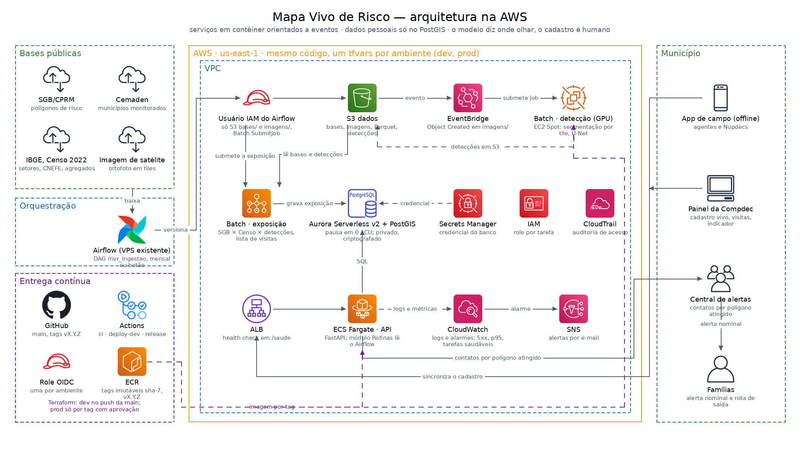
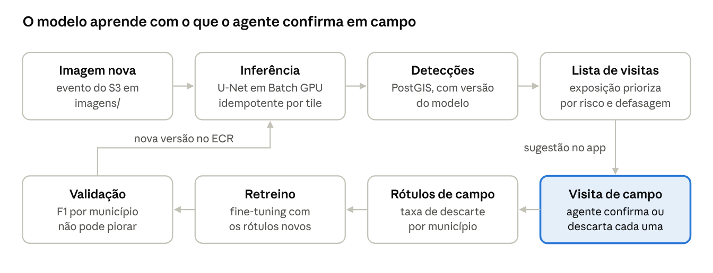
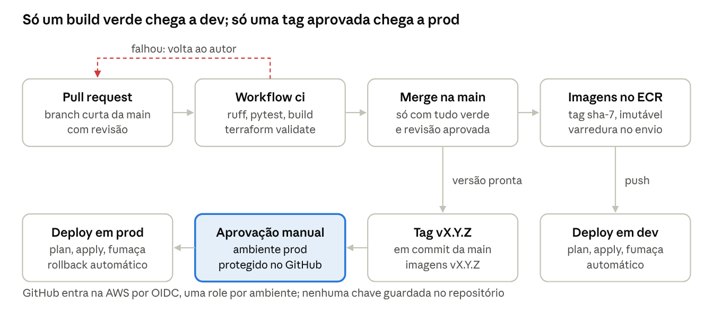

Sistematização — Ecossistemas Digitais Inteligentes · Parte 2: arquitetura e planejamento técnico da solução
| Disciplina | Ecossistemas Digitais Inteligentes — Prof. Ricardo Alves Neiva (Turma B, Campus Virtual) |
| Autor | Diego Nunes de Morais — trabalho individual |
| Data | 10 de novembro de 2026 |
| Entrega | Parte 2 — Arquitetura, integração de ML, nuvem e contêineres, CI/CD, qualidade, confiabilidade e governança de dados |
| Repositório | github.com/diegoedataengineer/mapa-vivo-de-risco — Terraform (rede, dados, registro, serviços, lote, observabilidade, cicd), workflows do GitHub Actions, ADRs 0001 a 0004 |
| Vídeo da Parte 3 | LINK DO GOOGLE DRIVE A INSERIR (até 8 min, visualização aberta) |
O Mapa Vivo de Risco é um conjunto de serviços em contêiner na AWS, ligados por eventos, que transforma bases públicas e imagem de satélite em uma lista priorizada de visitas e, depois da visita, em um cadastro de famílias pronto para o alerta. O modelo de visão computacional diz onde olhar; o cadastro continua humano. As decisões abaixo estão escritas como código no repositório (Terraform, workflows e registros de decisão), validado mas ainda não aplicado em uma conta da AWS. As seções 2 a 6 seguem os itens 2.1 a 2.5 do enunciado.
O estilo escolhido é de serviços em contêiner orientados a eventos: cada etapa do fluxo (ingestão, detecção, exposição, cadastro) roda sozinha e avisa a seguinte por um evento, sem chamada direta entre elas. A Figura 1 mostra os componentes, com as bases públicas à esquerda e os usuários do município à direita.

A Figura 2 segue um dado do início ao fim: cada passo é um serviço independente, e o que passa de um para o outro é um evento ou um arquivo versionado, nunca uma chamada direta.
Três razões justificam o estilo. O trabalho vem em rajadas: ingestão mensal, detecção só com imagem nova, cadastro no horário comercial; com eventos, cada parte liga quando tem o que fazer. Os perfis de máquina diferem: a detecção usa GPU por minutos e a API, CPU pequena o tempo todo, então escalam e falham separadas. E a arquitetura é evolutiva: um modelo, uma fonte ou outro sistema da carteira de Defesa Civil entra assinando um evento ou consumindo a API, sem mexer no resto. O custo aceito é a rastreabilidade mais difícil, compensada por município e versão das bases como identificador em todos os logs; um monólito em camadas exigiria GPU ligada o mês inteiro.
Problema resolvido. O Censo diz quantos endereços existiam em 2022; a imagem diz o que está construído hoje dentro do polígono de risco, a lacuna que Saito et al. (2019) declaram. O componente de IA conta e localiza as edificações na imagem, para que a visita vá primeiro onde há mais casas do que endereços conhecidos. Ele não classifica risco, que vem do SGB, e não cria registro de família.
Técnica e modelo. Segmentação semântica de edificações com uma rede convolucional do tipo U-Net (Ronneberger; Fischer; Brox, 2015), aprendizagem supervisionada. A primeira versão parte de um modelo aberto já treinado para pegadas de edificações e é ajustada (fine-tuning) com amostras brasileiras, porque assentamentos informais têm telhados pequenos, colados e de material variado, onde modelos treinados em bairros planejados erram mais (Schuegraf et al., 2024; da Silva; Rodrigues-Jr; de Albuquerque, 2025). A máscara de saída vira polígonos por vetorização, cada um com uma confiança.
Dados necessários. Como entrada, ortofoto municipal ou imagem de satélite submétrica, recortada em tiles dentro dos polígonos do SGB e do Cemaden. Para o ajuste inicial e a validação, pegadas de edificações abertas (OpenStreetMap e bases globais). Para o retreino, os rótulos que o app devolve a cada visita: edificação confirmada, inexistente ou não residencial. Para comparar, os endereços do CNEFE do Censo 2022.
Integração à aplicação. O modelo é empacotado numa imagem de contêiner com o código de inferência e roda como job do Batch em GPU, acordado pelo evento de imagem nova. A inferência é idempotente por tile: o nome do resultado inclui tile, data da imagem e versão do modelo, então um job interrompido pelo Spot recomeça sem duplicar. As detecções vão para o PostGIS com a versão do modelo, e a exposição as usa para priorizar visitas. A saída só chega ao agente como sugestão no mapa; o que ele confirma ou descarta volta como rótulo (Figura 3).

A validação usa IoU e F1 por município; uma versão nova só entra se não piorar o F1 em nenhum município de referência. O drift é medido pela taxa de descarte em campo: acima de uma em cada cinco sugestões num município, o modelo é marcado como suspeito ali e o retreino entra na fila.
O provedor sugerido é a AWS (us-east-1), com dev e prod descritos pelo mesmo código Terraform e um arquivo de variáveis por ambiente. Pesaram GPU sob demanda em Spot, PostgreSQL gerenciado com PostGIS e pausa quando ocioso, e a equipe já operar a AWS. São Paulo (sa-east-1) é a alternativa se o contrato exigir dado hospedado no Brasil. A ingestão reaproveita o Airflow 3 que a empresa já opera numa VPS.
Docker. Todo serviço é uma imagem Docker com seu Dockerfile, a mesma do desenvolvimento à produção; localmente, um Docker Compose sobe PostGIS e API. A imagem da detecção carrega o modelo, então código e modelo andam juntos numa tag. Kubernetes (EKS) foi descartado: com quatro serviços, operar um cluster não se paga, e Fargate e Batch isolam por contêiner sem nós para manter.
Só um build verde chega a dev, e só uma tag aprovada por uma pessoa chega a prod. Código, infraestrutura e modelo vivem num único repositório Git no GitHub, e o pipeline roda no GitHub Actions (Figuras 5 e 6).
Os itens de configuração versionados são código, Terraform, workflows, Dockerfiles, versão do modelo e manifesto das bases. Um retreino do modelo é só mais um commit: passa pelo mesmo portão de F1 e sai na mesma imagem. Em prod, o ECS mantém 100% da capacidade e reverte sozinho se a versão nova não ficar saudável.

ci volta ao autor; prod exige tag e aprovação manual no ambiente protegido.O dado mais sensível do sistema é a lista de quem mora numa casa em área de risco, com crianças, idosos e pessoas com mobilidade reduzida; por isso governança vem antes de desempenho. O município é o controlador do dado, o sistema é operador, e a base legal é a execução de política pública prevista na Lei 12.608/2012 (LGPD, art. 7º, III).
Qualidade e consistência dos dados. Cada base entra com manifesto (origem, data, sha256, versão) no S3 versionado, e toda estimativa aponta para as versões de base e de modelo que a geraram: linhagem completa. A ingestão rejeita geometria inválida e sistema de referência inesperado. O app valida o formulário e grava posição, foto, agente e hora; o modelo é medido por IoU, F1 e taxa de descarte em campo.
Segurança e privacidade. Dado pessoal existe só no Aurora, criptografado, em sub-rede privada; o S3 guarda imagens e agregados, nunca nomes, sem acesso público. Cada município vê só seus registros (row-level security no PostgreSQL) e cada perfil só os campos de que precisa. Credenciais no Secrets Manager, uma role mínima por tarefa, CloudTrail na nuvem e trilha de auditoria de quem viu e alterou cada registro. O consentimento é registrado na visita, e o indicador da meta 1.1.6 sai agregado, sem dado pessoal.
Disponibilidade e confiabilidade. A peça que não pode parar é a lista de contatos por polígono na hora do alerta, com meta de 99,5% no mês. Em prod, a API roda em duas zonas de disponibilidade e o banco tem duas instâncias com failover. O app funciona sem rede, porque área de risco costuma ser área sem sinal. Se a detecção parar, cadastro e alerta seguem com a última rodada.
Monitoramento e identificação de falhas. Health check em /saude no contêiner e no balanceador; logs estruturados com município e versão como rastreio. Alarmes do CloudWatch avisam por e-mail via SNS em erros 5xx, latência p95 alta, tarefas saudáveis abaixo do mínimo, CPU do banco alta, job com falha e ausência da ingestão mensal.
Tratamento de erros e recuperação. Jobs com retentativa (três na exposição, duas na detecção) e tempo máximo; idempotentes por tile e por município, podem ser refeitos com segurança, o que permite Spot. O deploy reverte sozinho quando a versão nova falha no health check. Depois da pausa do banco, a API repete a conexão e o painel mostra "acordando o banco". Backup diário com 14 dias em prod, proteção contra exclusão e S3 versionado. Um teste de caos em dev derruba a tarefa da API e exige que o alarme dispare e o serviço volte sozinho.
Declaração de uso de IA. Ferramentas de IA generativa (Claude Code) foram utilizadas como assistente de desenvolvimento — na escrita do Terraform, dos workflows, dos serviços e testes, dos diagramas e na redação deste documento — sob direção, revisão e validação do autor. As decisões de arquitetura registradas nas ADRs, a escolha dos serviços de nuvem e do modelo e a revisão do texto são de responsabilidade e autoria do autor.
Referências. BRASIL. Lei nº 12.608, de 10 de abril de 2012 (Política Nacional de Proteção e Defesa Civil) · BRASIL. Lei nº 13.709, de 14 de agosto de 2018 (Lei Geral de Proteção de Dados Pessoais) · BRASIL. MIDR. Plano Nacional de Proteção e Defesa Civil 2025–2035. Brasília, 2025 · DA SILVA, F.; RODRIGUES-JR, J. F.; DE ALBUQUERQUE, J. P. On the power of CNNs to detect slums in Brazil. Computers, Environment and Urban Systems, v. 121, 102306, 2025 · RONNEBERGER, O.; FISCHER, P.; BROX, T. U-Net: convolutional networks for biomedical image segmentation. In: MICCAI 2015. Springer, 2015, p. 234–241 · SAITO, S. M. et al. População urbana exposta aos riscos de deslizamentos, inundações e enxurradas no Brasil. Sociedade & Natureza, v. 31, e46320, 2019 · SCHUEGRAF, P. et al. AI-based building instance segmentation in formal and informal settlements. IGARSS 2024, IEEE, 2024 · NEIVA, R. A. Ecossistemas Digitais Inteligentes — webaulas 1 a 8, CEUB, 2026.